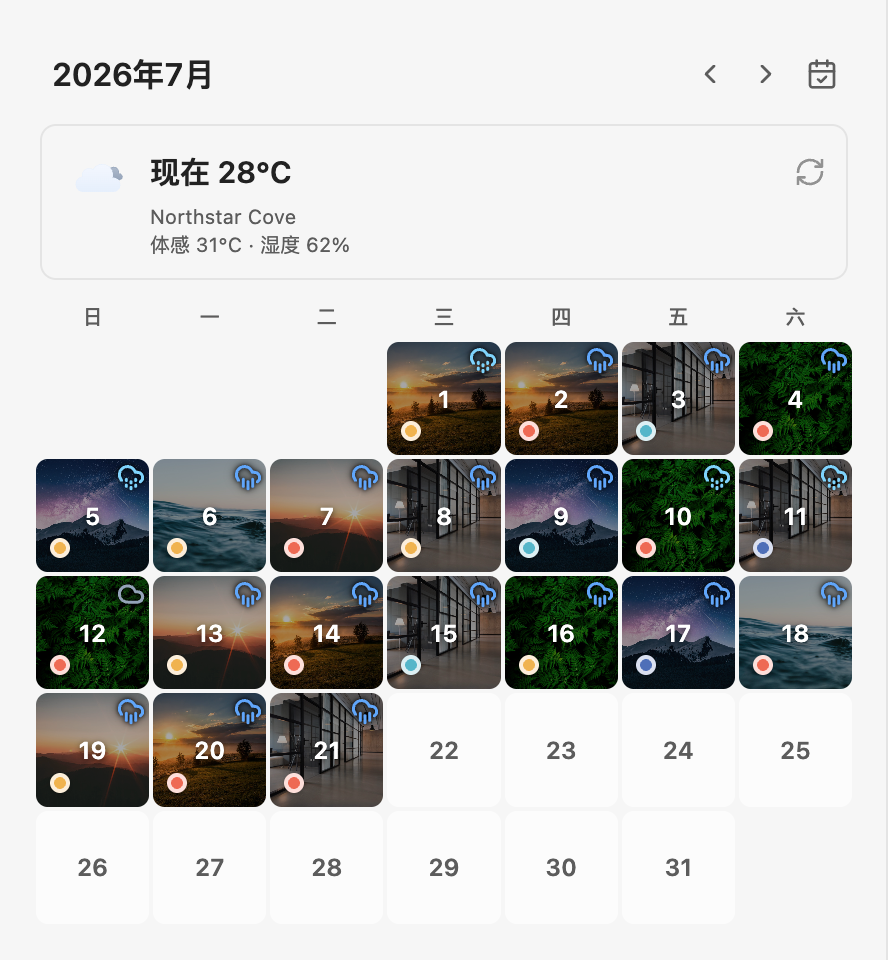
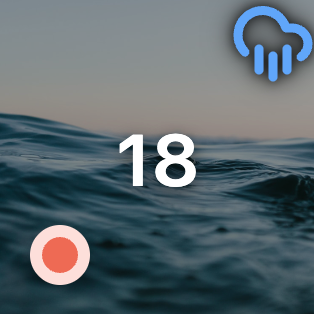
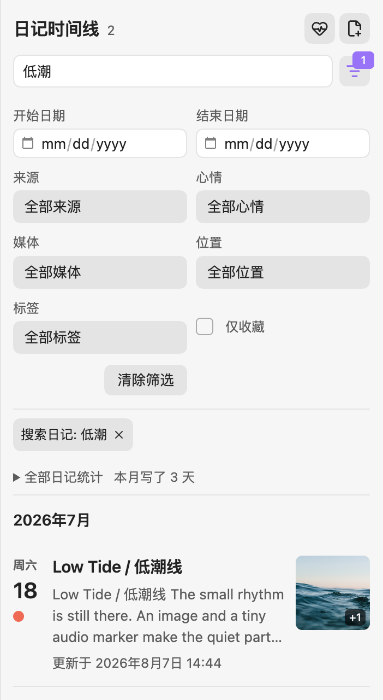
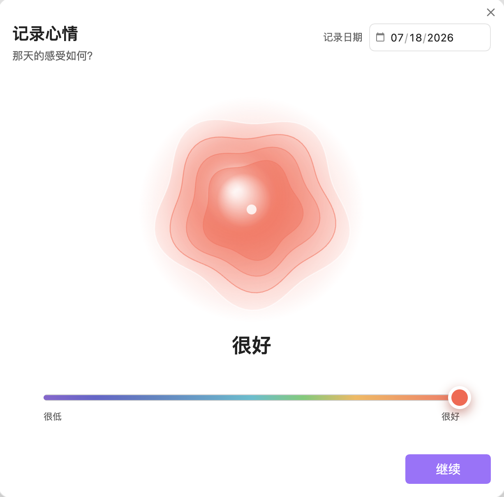
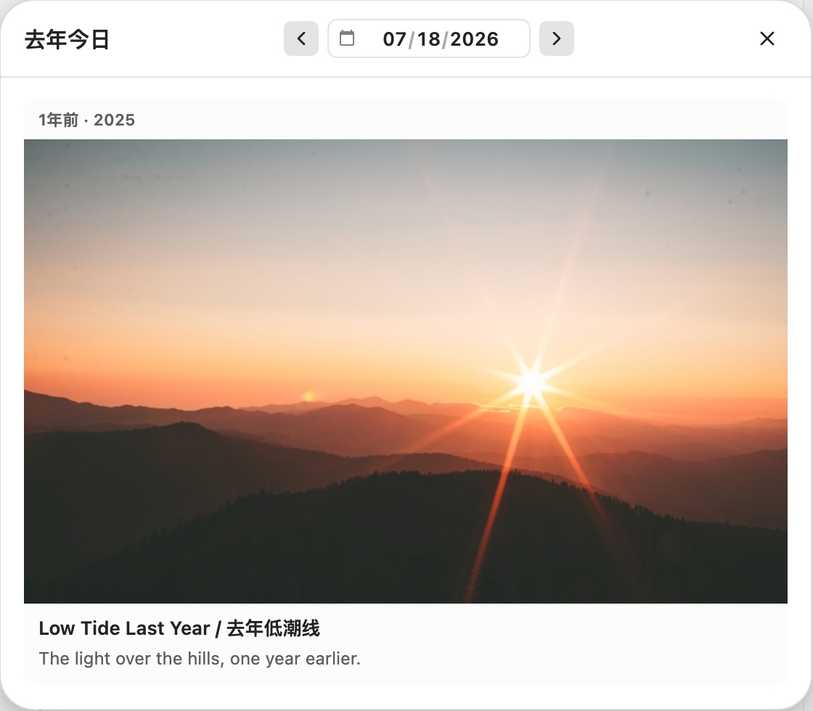

你写过的每一天，不该只是一串.md
Dayline 是一个 Obsidian 插件。它把每日笔记文件夹变成一面照片月历，标出心情和天气。笔记原样留在你的 vault 里。
免费 · MIT 开源 · 桌面端与手机端 · 需要 Obsidian 1.5.0+
- 照片月历笔记里的图片自动成为日期封面
- 日记时间线全文搜索，按心情、标签、位置筛选
- 心情与天气每天一个心情色点，附当天的天气


一篇笔记，就是一格日子
Dayline 读取你指定的每日笔记文件夹，认出日期，把每篇 Markdown 排进月历。你不用另外整理什么。
Dayline Demo/Daily/2026-07-18.md---title: Low Tide / 低潮线date: 2026-07-18location: Northstar Cove---# Low Tide / 低潮线 The small rhythm is still there.An image and a tiny audio markermake the quiet part of the week visible.

- 天气当天的天气，来自 Open-Meteo
- 封面笔记里嵌入的那张图
- 心情这一天记下的心情颜色
点一下格子就打开那天的笔记；还没写的日子，确认一次就按 Daily Notes 模板新建。

记得一个词，
就能翻回那天
日记时间线全文搜索标题和正文。记不清日子时，再按日期、心情、来源、位置、标签、媒体或收藏把范围缩小。
低潮7 月 18 日 · Low Tide / 低潮线
在 Dayline 里拖一下滑块，
就记下那天的感受
五级心情，下一步还能加感受标签和一句备注。月历格子上的色点就来自这里。

去年的今天，
也还在
打开“去年今日”，往年同一天写过的日记会连同照片一起回来。

装上它，笔记还是那个 .md
Dayline 只读你选的目录。正文不搬家、不改写，换个工具也照样能读。
your-vault/├─ Calendar/│ ├─ Daily/│ │ ├─ 2026-07-17.md│ │ ├─ 2026-07-18.md│ │ └─ 2026-07-19.md│ └─ journal-metadata.json心情记录，Dayline 新增└─ .obsidian/plugins/dayline-journal/ └─ data.json设置与天气缓存
- 你的笔记
- 不移动，不改写，正文仍是普通 Markdown
- 心情写回 frontmatter
- 默认关闭，打开后才写入
mood - 天气
- 可选，使用 Open-Meteo，不需要 API Key
- 照片 GPS 地名
- 默认关闭，打开前不会发送任何坐标
- 导出与备份
- 心情记录可导出 CSV 或 JSON，也能备份和恢复
- 账号与订阅
- 没有。免费，MIT 开源
现在就装
免费，MIT 开源。需要 Obsidian 1.5.0 或更新的版本。
在 Obsidian 中打开插件页
或者在 Obsidian 里手动找：
- 打开 设置 → 第三方插件，点“浏览”
- 搜索 ，认准作者 Haoo（另有一个叫 Dayline 的插件，不是同一个），安装并启用
- 运行命令
从旧版 Dayline 或 Calendar Sidebar 1.x 升级时，设置会自动迁移，不会改写笔记和心情记录。